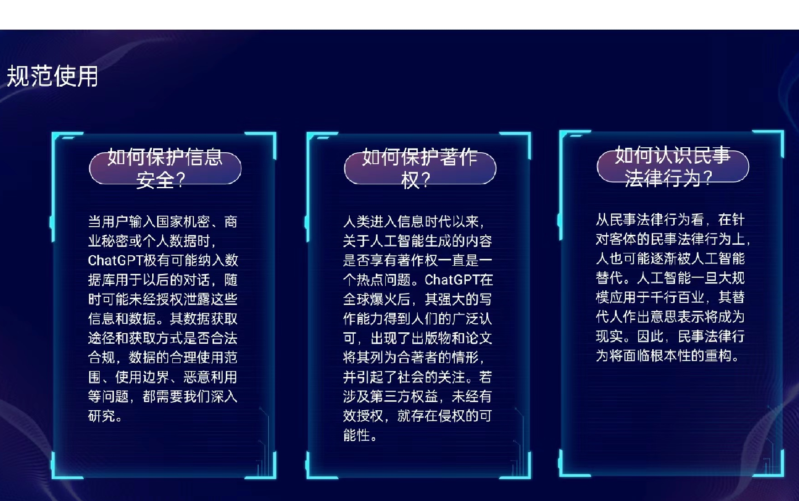

ChatGPT：探讨人工智能语言模型的争论
在当今数字化时代，人工智能技术取得了巨大的进展，其中自然语言处理模型如ChatGPT引发了广泛的争论。ChatGPT是由OpenAI开发的一种自然语言处理模型，它可以生成人类类似的文本，用于各种应用，但其出现也带来了一系列的讨论和争议。
潜在优势：ChatGPT可以用于自然语言理解、自动答疑、内容生成等领域，有望提高工作效率，提供教育和娱乐价值。它还可以为语言障碍者提供更多的交流渠道。 伦理和隐私问题：ChatGPT可以被用于不道德的目的，如欺骗、人身攻击，或扩大虚假信息的传播。此外，使用ChatGPT生成的文本可能会引发隐私问题，因为它可以产生看似真实的、但是虚构的信息。 偏见和歧视：ChatGPT的训练数据可能包含社会偏见和歧视，这会导致模型生成带有偏见的文本。这引发了公平性和社会公正的问题，因为ChatGPT可能强化和传播不平等。
个人认为，ChatGPT和类似的语言模型具有巨大的潜力，可以改善我们的生活，提供有益的服务。然而，争议的确是存在的，但它们并不是要求我们停止使用这些技术，而是促使我们更加谨慎地使用它们，并采取相应的措施来减轻潜在的负面影响。 首先，需要更加透明和公开的数据和算法，以减少偏见和歧视。对模型的培训数据进行清理，以确保它们尽量不包含偏见，是一个必要的步骤。 其次，伦理规范和法律法规需要跟上技术的步伐，确保恶意使用被惩罚，同时保护用户隐私。
最重要的是，我们需要教育和引导人们如何正确地使用这些技术，以确保它们对社会产生积极影响。培养对技术伦理的敏感性，以及对不断发展的AI技术的理解，对于大学生和社会大众都是至关重要的。
总而言之，chatgpt的来临反应的是时代的进步，抵制或过度使用都是不可取的。至于国内目前chatgpt还不能广泛使用，我想，或许在使用之前，我们起码要先学会科学上网。
(ps:超链接标签名为个人编写，并非原本文章标题，仅代表个人对文章概括)